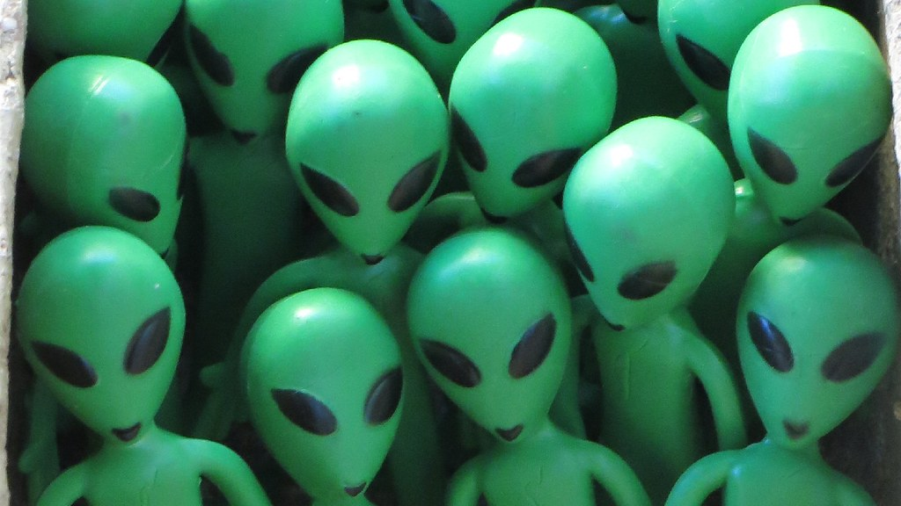

The Illuminati is a secret society, beyond that people aren't really sure what it is. Historically, it is a reference to the Bavarian Illuminati founded in 1776 Germany by people with enlightenment ideals who wanted to take over the world. Currently, the Illuminati is thought to be the source of many strange occurrences that become covered up by the government which could link the two entities together.
Their goal is to unite in order to control the world for their own agenda. The logo is perhaps the most interesting part of this topic. It is called The Eye of Providence, and interestingly, it appears on the US dollar bill.
The most popular reason for why this eye is on the dollar bill is because it acts as a "Big Brother" always watching over you so that you may think twice about doing something bad with the money with that scary eye watching you.

It is possible that all of these speculations are just false and that the Illuminati that disbanded in 1785 was the final form that the Illuminati took. That was when the Duke of Bavaria, Karl Theodor, banned secret societies and made most of their secrets public. According to this claim, the Eye of Providence has no other significant meaning other than being the eye that is always watching you while dealing with money to potentially prevent you from doing something bad. Nevertheless, even if this claim is accurate, there are numerous amounts of media involving the Illuminati that have them working in the shadows and controlling the world in the background and being run by powerful figures such as celebrities or presidents.

Is it possible that extra-terrestrials influence our purchasing habits by having the ability to change and predict the world's economy through the Illuminati. It has been theorized that since aliens are secretly invading the planet we may be influenced without us even being aware of it. Possible motives for the aliens could be that in the near future they will launch a more direct invasion and wish to gather information that they could use against us to ensure their triumph. If this theory is accurate, this would mean that aliens are already far more advanced than us.
The first theory explains that the Illuminati does not exist and is possibly the most likely claim about the Illuminati. However, it is also possible that the Illuminati does in fact exist in a very small form, so small that it's influence is limited. The popular theory among historians is that the Illuminati exists by virtue of the legends created by the original Illuminati that existed in the second half of the 18th century. It is still possible that all of their secrets are not common knowledge and are waiting to be discovered.
The next theory is a big stretch as it is almost certain that there is little truth to this far-fetched claim. Firstly, even the existence of aliens are not proven therefore it would be hard to find any hard and believable evidence for this it. Secondly, the possibility that they could be controlling the world's economy would take an unbelievable amount of work and would be very hard to go unnoticed without inside help. It is possible that aliens would have help from humans who would be considered traitors if they're helping the aliens for nefarious purposes. This claim is also a popular storyline for traditional movies and tv shows, as it is the basis for an alien invasion. To conclude, this claim is not a likely one since it would be too hard to hide and it would likely result in a war between humans and aliens who are probably more advanced than us if they were able to invade our planet secretly.
 Back to top
Back to top